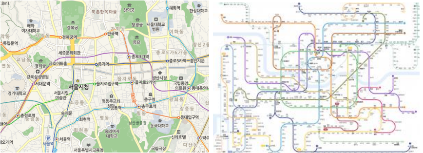

자바스크립트 객체
여러 개의 프로퍼티와 메소드로 구성
프로퍼티: 객체의 고유한 속성(변수)
메소드: 함수
자바스크립트는 객체 기반 언어,
객체 지향 언어 아님
자바스크립트 객체 종류
- 코어 객체
- HTML DOM 객체
- 브라우저 객체
document 객체는 BOM객체에 속하지만, document의 하위 객체는 DOM 객체에 속한다.
코어 객체
웹페이지와 웹서버 등 어디서나 사용가능한 기본 객체
종류: Array, Date, String, Math 등
코어 객체 생성 - new 키워드를 이용
객체가 생성되면 객체 내부에 프로퍼티와 메소드들 존재
객체 접근 - 객체와 멤버 사이에 점(.) 연산자 이용
배열 만들기 (Array)
let plots = [20, 5, 8, 15, 20]; // 원소 5개의 배열 생성
document.write("var plots = [20, 5, 8, 15, 20]<br>");
for(let i=0; i < 5; i++) {
let size = plots[i]; //plots 배열의 i번째 원소
while(size > 0) {
document.write("*");
size--;
}
document.write(plots[i] + "<br>");
}
배열 원소의 개수, length 프로퍼티
let m = array.length; // 변수 m 에는 배열 array의 원소의 개수가 대입됨
array.length = 10; // 배열 array의 크기를 10으로 만들 수 있음
let array = [0, 5.5, "Hello", new Date(), convertFunction] //하나의 배열에 여러 타입이 섞여있어도 문제 없다.
현재 시간 나타내기 (Date)
let now = new Date(); // 현재 날짜와 시간(시, 분, 초) 값으로 초기화된 객체 생성
let start = new Date(2017, 2, 1); // 2017년 3월 1일 (2는 3월)
// Date 객체 생성
let today = new Date();
// Date 객체의 toLocaleString() 메소드 호출
document.write("현재 시간 : " + today.toLocaleString() + <br>");
String
String 객체는 일단 생성되면 수정 불가능
let hello = new String("Hello"); // String 객체 생성
let hi = "Hi"; // String 객체 생성
let m = hello.length; //문자열의 길이를 m에 대입, m = 5
let c = hello[0]; // [] 연산자를 이용하여, 배열처럼 각 문자 접근이 가능함
length 프로퍼티는 읽기 전용이다. 따라서 hello.length = 10; 같은 것은 불가
Math
new Math()로 객체를 생성하지 않고 사용
let sq = Math.sqrt(4); // 4의 제곱근을 구하여 sq 에 2 대입
let area = Math.PI*2*2; // 반지름이 2인 원의 면적을 구하여 area 에 대입
let r = Math.random()*100; // r은 0~99.000... 보다 작은 실수 난수
let r2 = Math.random(r); // r은 0 ~ 99
사용자 객체
사용자가 새로운 타입의 객체 작성 가능: 3가지 방법 존재
-
직접 객체 만들기
- new Object() 이용
- 리터럴 표기법 이용
-
객체의 틀(프로토타입)을 만들고 객체 생성하기
new Object()로 객체 만들기
<과정>
1. new Object() 로 빈 객체 생성
2. 빈 객체에 프로퍼티 추가
3. 빈객체에 메소드 추가
let account = new Object(); // 1. new Object() 로 빈 객체 생성
account.owner = "한성대"; // 2. 빈 객체에 프로퍼티 추가
account.inquiry = inquiry; // 3. 빈객체에 메소드 추가
리터럴 표기법으로 객체 만들기
중괄호를 이용하여 객체의 프로퍼티와 메소드 지정, 가장 흔한 방법
let account = {
// 프로퍼티 생성 및 초기화
owner: "황기태",
code: "111",
balance: 35000,
// 메소드 작성
inquiry: function() { return this.balance; }, // 메소드명을 앞에씀
deposit: function(money) { this.balance += money; } // 메소드명을 앞에씀
}
프로토타입
프로토타입: 객체의 모양을 가진 틀 (클래스와 같은 역할)
자바스크립트에서 제공하는 프로토타입: Array, Data, String
객체 생성시 'new 프로토타입' 이용
let week = new Array(7); //Array 는 프로토타입
let hello = new String("hello"); //String 은 프로토타입
// 프로토타입 Student 작성
function Student(name, score) {
this.univ = "한국대학"; // this.univ을 이용하여 univ 프로퍼티 작성
this.name = name; // this.name을 이용하여 name 프로퍼티 작성
this.score = score; // this.score를 이용하여 score 프로퍼티 작성
this.getGrade = function () { // getGrade() 메소드 작성
if(this.score > 80) return "A";
else if(this.score > 60) return "B";
else return "F";
}
}
let kitae = new Student("황기태", 75); // Student 객체 생성
let jaemoon = new Student("이재문", 93); // Student 객체 생성
document.write(kitae.univ + ", " + kitae.name + "의 학점은 " + kitae.getGrade() + "<br>");
document.write(jaemoon.univ + ", " + jaemoon.name + "의 학점은 " + jaemoon.getGrade() + "<br>");
실세계의 추상화
현실세계에 있는 것들을 추상화
예시

컴퓨팅 추상화
소를 자바스크립트로 표현해보기
function give(feed) {
this.feedbox += feed;
document.write("feedbox:" + this.feedbox + "<br>");
}
function eat() {
while(this.feedbox > 0) {
if(this.stomach < 100) {
document.write("먹기 ");
this.feedbox -= 10;
this.stomach += 10;
document.write("feedbox:"+this.feedbox);
document.write(", stomach:"+this.stomach);
document.write("<br>");
}
else {
break;
}
}
}
let cattle = new Object(); // cattle이라는 객체 생성
cattle.stomach = 0; // 변수
cattle.feedbox = 0; // 변수
cattle.give = give; // 메서드
cattle.eat = eat; // 메서드
cattle.give(70);
cattle.eat();
cattle.give(50);
cattle.eat();
cattle.give(50);
cattle.eat();